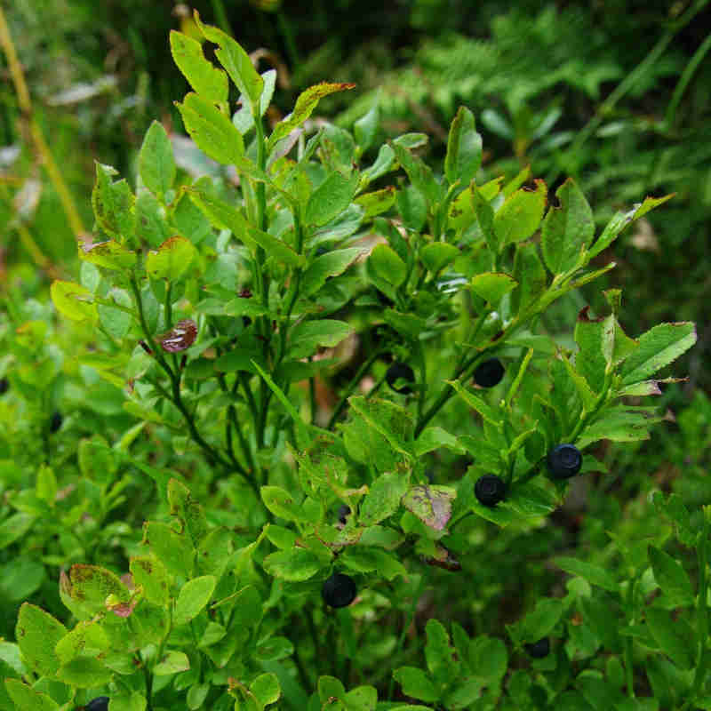
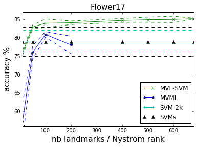
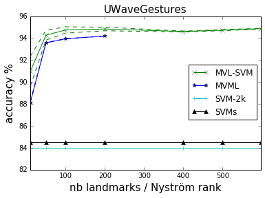
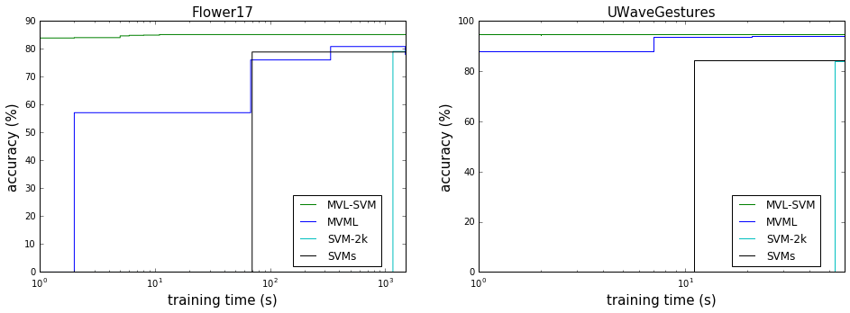
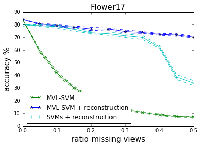
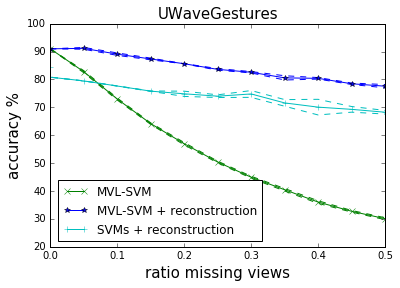

Please wait, while the deck is loading…
`(at some point in the past, not exaustive) {denser}` {image-full bottom-left darkened /black-bg /no-status} // Machine Learning Group in Saint Étienne {comment} ## Disclaimer {image-full bottom-left darkened /black-bg /no-status} ## In a nutshell {#nutshell} - Transfer learning has multiple facets - multi-task - multi-view - multi-domain - Domain adaptation by bringing distributions together - by aligning subspaces obtained from PCA - non-linearly by using projection on landmarks - Landmarks can also be used for multiview-learning - random landmark selection - non-linear projection on the landmarks - fast linear model # Transfer Learning:
Multi-* Learning // Domain Adaptation, Multi-View, Multi-Task ## Multi-Task Learning - Covered a lot in this summer school - (At least), different output for each task, e.g., - different classification task: dog-vs-cat and domestic-vs-wild - different output kind: image segmentation and image classification - ... ## Multi-View Learning - Input have multiple views, e.g. - different viewpoints of an object - multi-modal perception - different medical tests on a patient - different sets of features extracted from images - ... - There could be missing views for some input data *(we'll come back to this){denser}* # Multi-domain Learning? ## Domain Adaptation: What and Why? {libyli} - When do we need Domain Adaptation (DA)? {card} - The
{no} - {inlineblock center no custom1} -

- 
a low-error classifier on
drawn *i.i.d.* from $\green{P_S}{}$ {c5} - {c1} - Unlabeled
drawn *i.i.d.* from $\orange{P_T}{}$ {c5} - $h$ is learned on the
*Basura Fernando, Amaury Habrard, Marc Sebban, Tinne Tuytelaars* {paper libyli} - Intuition for unsupervised domain adaptation - principal components of the domains may be shared - principal components should be re-aligned - Principle // with K.U. Leuven (T. Tuytelaars) - extract a
that aligns the
 {no}
## Subspace Alignment − Algorithm
- Algorithm {card custom2 libyli}
- **Input:** Source data $\green{S}{}$, Target data $\orange{T}{}$, Source labels $\green{L\_S}{}$
- **Input:** Subspace dimension $d$ {no}
- **Output:** Predicted target labels $\orange{L\_T} {}$ {no}
- $\green{X\_S} \leftarrow PCA(\green{S},d)$ *(source subspace defined by the first d eigenvectors)*
- $\orange{X\_T} \leftarrow PCA(\orange{T},d)$ *(target subspace defined by the first d eigenvectors)*
- $M \leftarrow \green{X\_S}' \orange{X\_T}{}$ *(closed form alignment)*
- $X\_a \leftarrow \green{X\_S} M$ *(operator for aligning the source subspace to the target one)*
- $\gray{S\_a} = \green{S} X\_a$ *(new source data in the aligned space)*
- $\gray{T\_T} = \orange{T} \orange{X\_T}{}$ *(new target data in the aligned space)*
- $\orange{L\_T} \leftarrow Classifier(\gray{S\_a},\green{L\_S}, \gray{T\_T})$
- A natural similarity: $Sim(\mathbf{x}\_s,\mathbf{x}\_t)=\mathbf{x}\_sX\_SMX\_T' \mathbf{x}\_t'=\mathbf{x}\_sA \mathbf{x}\_t'$ {slide}
## Subspace Alignment − Recap. {#sarecap}
- Good
- Very simple and intuitive method
- Totally unsupervised
- Theoretical results for dimensionality detection
- Good results on computer vision datasets
- Can be combined with supervised information // as we learn in the target space in the end
- Bad {limitations}
- Cannot be directly kernelized to deal with non linearity
- Actually assumes that spaces are relatively close
- Ugly {limitations}
- Assumes that all the source and target examples are relevant
- **Idea:** *Select landmarks from both source and target domains to project the data in a common space using a kernel w.r.t those chosen landmarks. Then the subspace alignment is performed. {dense}* {hidden}
# @copy:#plan: %+class:highlight: .landmarks
# @copy:#sarecap: %+class:highlight: .limitations + %-class:hidden: .hidden
## Principle of Landmarks {libyli}
- JMLR 2013 − *Connecting the Dots with Landmarks:
{no}
## Subspace Alignment − Algorithm
- Algorithm {card custom2 libyli}
- **Input:** Source data $\green{S}{}$, Target data $\orange{T}{}$, Source labels $\green{L\_S}{}$
- **Input:** Subspace dimension $d$ {no}
- **Output:** Predicted target labels $\orange{L\_T} {}$ {no}
- $\green{X\_S} \leftarrow PCA(\green{S},d)$ *(source subspace defined by the first d eigenvectors)*
- $\orange{X\_T} \leftarrow PCA(\orange{T},d)$ *(target subspace defined by the first d eigenvectors)*
- $M \leftarrow \green{X\_S}' \orange{X\_T}{}$ *(closed form alignment)*
- $X\_a \leftarrow \green{X\_S} M$ *(operator for aligning the source subspace to the target one)*
- $\gray{S\_a} = \green{S} X\_a$ *(new source data in the aligned space)*
- $\gray{T\_T} = \orange{T} \orange{X\_T}{}$ *(new target data in the aligned space)*
- $\orange{L\_T} \leftarrow Classifier(\gray{S\_a},\green{L\_S}, \gray{T\_T})$
- A natural similarity: $Sim(\mathbf{x}\_s,\mathbf{x}\_t)=\mathbf{x}\_sX\_SMX\_T' \mathbf{x}\_t'=\mathbf{x}\_sA \mathbf{x}\_t'$ {slide}
## Subspace Alignment − Recap. {#sarecap}
- Good
- Very simple and intuitive method
- Totally unsupervised
- Theoretical results for dimensionality detection
- Good results on computer vision datasets
- Can be combined with supervised information // as we learn in the target space in the end
- Bad {limitations}
- Cannot be directly kernelized to deal with non linearity
- Actually assumes that spaces are relatively close
- Ugly {limitations}
- Assumes that all the source and target examples are relevant
- **Idea:** *Select landmarks from both source and target domains to project the data in a common space using a kernel w.r.t those chosen landmarks. Then the subspace alignment is performed. {dense}* {hidden}
# @copy:#plan: %+class:highlight: .landmarks
# @copy:#sarecap: %+class:highlight: .limitations + %-class:hidden: .hidden
## Principle of Landmarks {libyli}
- JMLR 2013 − *Connecting the Dots with Landmarks: Discriminatively Learning Domain-Invariant Features for Unsupervised Domain Adaptation{denser}* {no} - Boqing Gong, Kristen Grauman, Fei Sha - Principle: find source points (the landmarks) such that
the domains are similarly distributed “around” {inlineblock} - @svg:images-da-landmarks/landmarks1.svg 280px 100px - @svg:images-da-landmarks/landmarks2.svg 280px 100px - Optimization problem: $\min\_\alpha \left\\| \frac{1}{\sum\_m \alpha\_m } \sum\_m \alpha\_m \phi (x\_m) - \frac{1}{N} \sum\_n \phi(x\_n) \right\\|^2$ {dense} - {no} - $\alpha$: binary landmark indicator variables - $\phi(.)$: nonlinear mapping, maps every $x$ to a RKHS - minimize the difference in sample-means - \+ a constraint: *labels should be balanced among the landmarks* ## Landmarks-based Kernelized Subspace Alignment for Unsupervised DA − CVPR 2015
*Rahaf Aljundi, Rémi Emonet, Damien Muselet, Marc Sebban* {paper libyli} - Intuition for landmarks-based alignment - subspace alignment does not handle non-linearity - subspace alignment cannot “ignore” points - landmarks can be a useful to handle locality and non-linearity - Challenges - selecting landmarks in a unsupervised way - choosing the proper Gaussian-kernel scale @svg:images-da-landmarks/landmarks3.svg 700px 200px ## Proposed Approach − Workflow @svg:images-da-landmarks/workflow.svg 700px 400px - @anim: %viewbox:#zlandpro + - @anim: #s1 | #s1t2 | #s2 | #s3 | %viewbox:#zpca - @anim: #s4 | %viewbox:#zalign - @anim: #s5 | %viewbox:#zclassify - @anim: #s6 | #s7 | %viewbox:#zall - Overall approach - 2 new steps: *landmark selection*, *projection* on landmarks - subspace alignment ## Multiscale Landmark Selection {libyli} - Select landmarks among all points, $\green{S} \cup \orange{T} {}$ - Greedy selection - consider each candidate point $c$ and a set of possible scales $s$ - criteria to promote the candidate - after projection on the candidate - the overlap between source and target distributions is above a threshold - Projection: a point is projected with $K(c, p)= \exp \left( \frac{-\left\|c - p\right\|^2}{2 s^2} \right)$ {dense} - Overlap {libyli} - project
(JMLR 2016) // Yaroslav Ganin, Evgeniya Ustinova, Hana Ajakan, Pascal Germain, Hugo Larochelle, François Laviolette, Mario Marchand, Victor Lempitsky - ADDA - chairlifts - avoiding negative transfer using domain distances // - @anim: #domclass | #domclassback | #grl | #grlfeat - Batch normalization and AdaBN - AutoDIAL - Multitask-multidomain semantic segmentation (Damien Fourure) - *@SVG: media/mdmt.svg 350 180 {inlineblock}* {no} # @copy:#plan: %+class:highlight: .mvlsvm # Multi-view Classification
with Landmark-based SVM {title-slide} - by **Valentina Zantedeschi**, Rémi Emonet, Marc Sebban - as part of the ANR LIVES project (multiview) ## MVL-SVM Principle - Randomly select landmarks {select-landmarks} - $L$ points $l_1, l_2, \cdots, l_L$ from the dataset - with no missing views - Project all points on this landmarks {project} - use an arbitrary $\mu$ similarity measure - Learn a model (classifier) {learn} - in the joint projected space - fast and linear (non-linearity already in the projection) - *@SVG: mvlsvm/mvlsvm.svg 750 250* {no} - @anim: #xi |#xin |#v1 |#v2 |#v3 - @anim: .select-landmarks | .project - @anim: #mapv1 |#mapv2 |#mapv3 |#muxi |#mapjoint, #joint |.learn |#fx, #learnjoint ## Generalization Bound - The generalization bound of MVL-SVM,
derived using the Uniform Stability framework: $ R_{\mathcal{D}}(f)\\! \leq \\!\hat{R}_{S}(f) + \frac{c L V M^2}{m} + \left( 2c L V M^2 \\!+ \\!1 \\!+\\! 2c \sqrt{L V} M \\! \right)\\!\\!\sqrt{\frac{\ln \frac{1}{\delta}}{2m}} {dense}$ - $L$ number of landmarks - $M$ number of views - $m$ number of samples - NB - stable if $L \ll \frac{m}{V}{}$ // ok, as usually $m \gg V$. - the lower $L$, the more stable ## MVL-SVM Results {libyli} // svm-2k co-regularization of view to maximize agreement - {inlineblock no} // MVML Multi-view Metric Learning (MVML) which combines vvRKHS with Metric Learning -  {c5} -  {c5} - {inlineblock no} -  {c10} ## Missing Views? {libyli} - Landmark-based missing view reconstruction method - Allow to maintain accuracy and scalability - {inlineblock no} -  {c5} -  {c5} # @copy:#nutshell # Thank You
Questions? {deck-status-fake-end no-print} # Supplementary Material {no-print} # Supp. on source and target risk {sup-risks} ## Link the Target Risk to the Source? \begin{matrix} \\\\ R\_{\orange{P\_T}}(h)&=& \mathbf{E}\_{(x^t,y^t)\sim \orange{P\_T}}\mathbf{I}\big[h(x^t)\ne y^t\big]\\\\ \\\\ &=&\mathbf{E}\_{(x^t,y^t)\sim \orange{P\_T}}\frac{\green{P\_S}(x^t,y^t)}{\green{P\_S}(x^t,y^t)}\mathbf{I}\big[h(x^t)\ne y^t\big]\\\\ \\\\ &=&\sum\_{(x^t,y^t)} \orange{P\_T}(x^t,y^t)\frac{\green{P\_S}(x^t,y^t)}{\green{P\_S}(x^t,y^t)}\mathbf{I}\big[h(x^t)\ne y^t\big]\\\\ \\\\ &=&\mathbf{E}\_{(x^t,y^t)\sim \green{P\_S}}\frac{\orange{P\_T}(x^t,y^t)}{\green{P\_S}(x^t,y^t)}\mathbf{I}\big[h(x^t)\ne y^t\big]\\\\ \end{matrix} {latex slide} # Supp. on covariate shift ## Domain Adaptation − Covariate Shift? {libyli} // This difference between the two domains is called covariate shift (Shimodaira, 2000). - {card dense} - R\_{\orange{P\_T}}(h)\; =\;\; \mathbf{E}\_{(x^t,y^t)\sim \green{P\_S}}\frac{\orange{P\_T}(x^t,y^t)}{\green{P\_S}(x^t,y^t)}\mathbf{I}\big[h(x^t)\ne y^t\big] {latex} - The
{no} - \begin{matrix} {R\_{\orange{P\_T}}(h)}&=&\mathbf{E}\_{(x^t,y^t)\sim \green{P\_S}}\frac{\orange{D\_T}(x^t)\orange{P\_T}(y^t|x^t)}{\green{D\_S}(x^t)\green{P\_S}(y^t|x^t)}\mathbf{I}\big[h(x^t)\ne y^t\big]\\\\ \\\\ &=&\mathbf{E}\_{(x^t,y^t)\sim \green{P\_S}}\frac{\orange{D\_T}(x^t)}{\green{D\_S}(x^t)}\mathbf{I}\big[h(x^t)\ne y^t\big]\\\\ \end{matrix} {latex no slide} - **⇒ Approach**: density estimation and instance re-weighting {no slide} // actually, it is simpler to estimate the density of the ratio - {notes notslide} - nice pres http://www.slideserve.com/Anita/sample-selection-bias ## Supp. on Subspace Alignment Results {.sup-saresults} ## Subspace Alignment − Experiments {libyli} - *@svg:images-da-align/img-iccv13.svg 800px 200px* {no} - Comparison on visual domain adaptation tasks // SURF, 800 words? - adaptation from Office/Caltech-10 datasets (four domains to adapt) - adaptation on ImageNet, LabelMe and Caltech-256 datasets: one is used as source and one as target - Other methods - Baseline 1: projection on the source subspace - Baseline 2: projection on the target subspace - 2 related methods: - GFS [Gopalan et al.,ICCV'11] // Geodesic flow subspaces - GFK [Gong et al., CVPR'12] // Geodesic flow kernel ## Subspace Alignment − Results {dense libyli} - Office/Caltech-10 datasets {inlineblock} - @svg:images-da-align/result1-NN-iccv13.svg 330px 250px - @svg:images-da-align/result1-SVM-iccv13.svg 330px 250px - ImageNet (I), LabelMe (L) and Caltech-256 (C) datasets {inlineblock} - @svg:images-da-align/result2-NN-iccv13.svg 330px 130px - @svg:images-da-align/result2-SVM-iccv13.svg 330px 130px # Attribution ## CC by genevieveromier (Flickr) {image-full bottom-left darkened /black-bg /no-status} ## CC by anmuell (Flickr) {image-full bottom-left darkened /black-bg /no-status} ## CC by sgillies (Flickr) {image-full bottom-left darkened /black-bg /no-status} ## CC by mustetahra (Flickr) {image-full bottom-left darkened /black-bg /no-status}
/ − − automatically replaced by the title